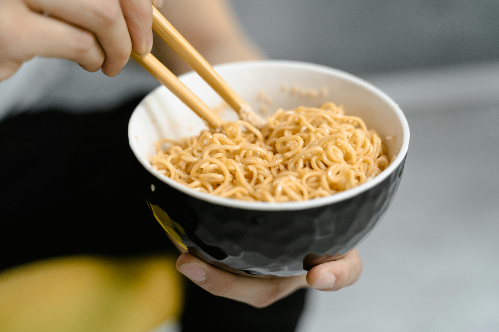

Two-Minute Noodles Recipe

Description
I don't believe you don't know how to make two-noodles the instructions are on the package.
Fine I guess I do add one secret ingredient to make it taste a little better.
Ingredients
- Packet of Two-Minute Noodles (Any brand)
- Boiled Water
- Lemon Juice
Steps
- Open the Two-Minute Noodles package and place into a bowl.
- Boil hot water and pour into the bowl of Two-Minute Noodles.
- Open the spice sachets and spread into the same bowl.
- Throw in some lemon juice, I don't know the exact measurement so wing it (thats the special ingredient if you havent guessed).
- Place a plate over the bowl to increase the cooking process of the noodles.
- Add Boiled Eggs if you want for that protein source, maybe you'd want an actual recipe on how to make them.
- Otherwise enjoy another increadibly simple recipe.
Odin Recipes